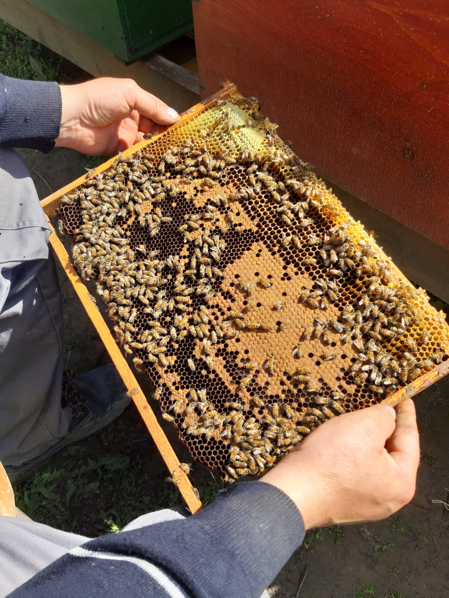
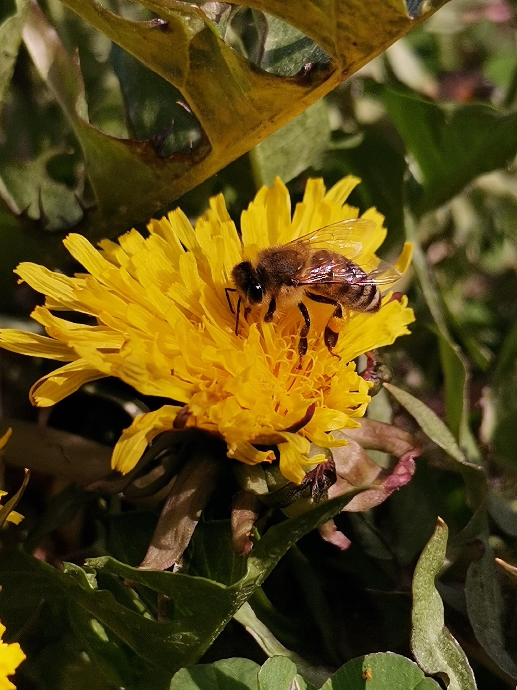

Toată lumea ar trebui să aibă o pasiune.... pentru mine asta constă în apicultură. Cresc albine de mai bine de 30 de ani cu ajutorul familiei. Vindem produse, precum: miere de salcâm, miere polifloră, propolis și polen. Dacă vă interesează orice produs, vă rugăm să ne contactați .
